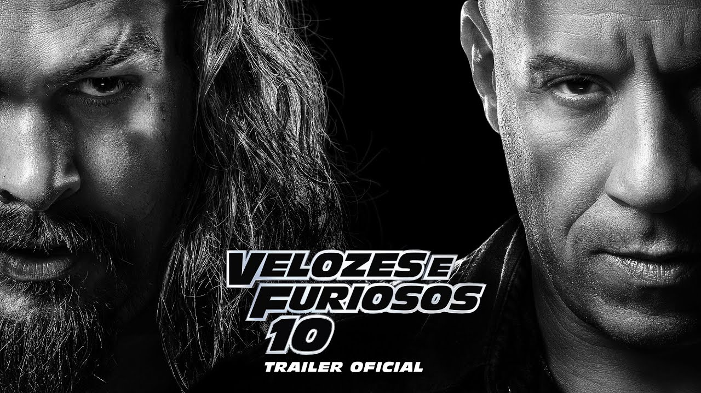

Último a ser lançado

Velozes e Furiosos 10
No décimo filme da série Velozes & Furiosos e último da nova trilogia (Velozes 8, 9 e 10), ao longo de muitas missões e contra probabilidades que pareciam impossíveis, Dom Toretto (Vin Diesel) e sua família foram mais espertos e superaram todos os inimigos em seu caminho. Agora, eles devem desafiar o adversário mais letal que já enfrentaram.

Alimentada pela vingança, uma ameaça terrível emerge das sombras do passado na forma de Dante (Jason Momoa), para destruir o mundo de Toretto e destruir tudo - e todos - que ele ama. Ele então, comandando novamente a equipe de corredores mais conhecida do mundo, encara mais uma difícil missão sobre quatro rodas.
